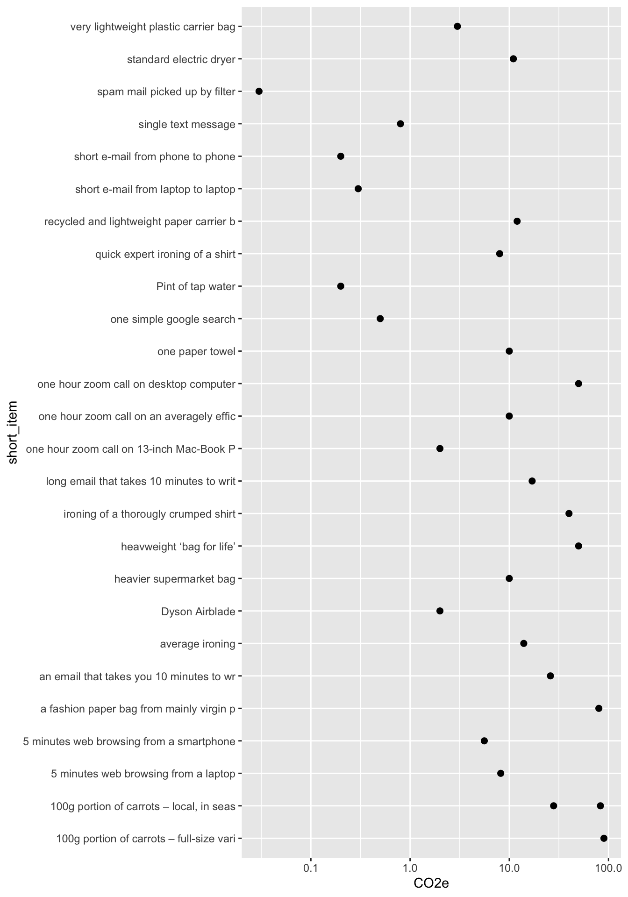

Recently, I have come a across a book that I find really wonderful: “How bad are bananas” by Mike Berners-Lee Berners-Lee (2020).
I would really like to use some of the data for a school project (of course citing the source in an adequate manner). It would be nice to use the data to develop a simple footprint calculator that is available online. Explicite permission from the author to use the data from his book with appropriate inidication of the data source is pending, however, with proper citation it should be okay to use the data I figure.
Table
Here, I started to collect some of the data in the book and put them in a table:
| CO2e | Item |
|---|---|
| 0.20 | Pint of tap water |
| 0.03 | spam mail picked up by filter |
| 0.20 | short e-mail from phone to phone |
| 0.30 | short e-mail from laptop to laptop |
| 17.00 | long email that takes 10 minutes to write and 3 minutes to read, sent from laptop to laptop |
| 26.00 | an email that takes you 10 minutes to write, sent to 100 people, 99 of whom take 3 seconds to realise they should ignore it and on the whom reads it |
| 0.50 | one simple google search |
| 5.60 | 5 minutes web browsing from a smartphone |
| 8.20 | 5 minutes web browsing from a laptop |
| 0.80 | single text message |
| 3.00 | very lightweight plastic carrier bag |
| 10.00 | heavier supermarket bag |
| 50.00 | heavweight ‘bag for life’ |
| 2.00 | Dyson Airblade |
| 10.00 | one paper towel |
| 11.00 | standard electric dryer |
| 12.00 | recycled and lightweight paper carrier bag |
| 80.00 | a fashion paper bag from mainly virgin paper |
| 8.00 | quick expert ironing of a shirt |
| 14.00 | average ironing |
| 40.00 | ironing of a thorougly crumped shirt |
| 2.00 | one hour zoom call on 13-inch Mac-Book Pro |
| 10.00 | one hour zoom call on an averagely efficient laptop |
| 50.00 | one hour zoom call on desktop computer |
| 28.00 | 100g portion of carrots – local, in season, full-size varieties |
| 83.00 | 100g portion of carrots – local, in season, baby carrots |
| 90.00 | 100g portion of carrots – full-size varieties, shipped within Europe |
Plots

References
Berners-Lee, Mike. 2020. How Bad Are Bananas?: The Carbon Footprint of Everything - 2020 New Edition. New ed. updat. and expand. Profile Books.